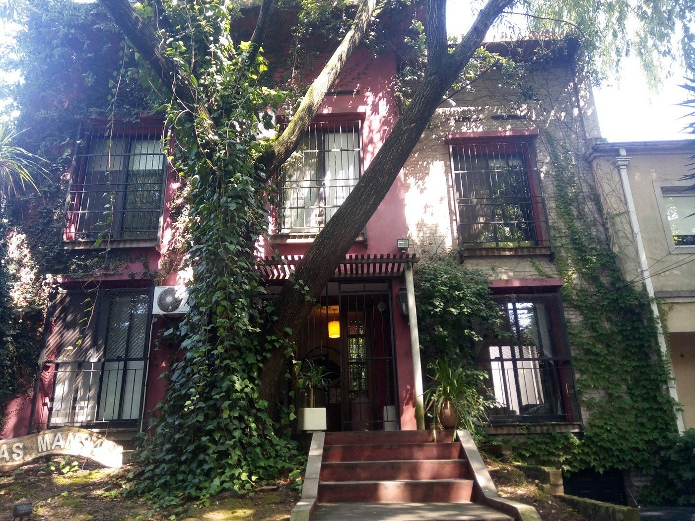
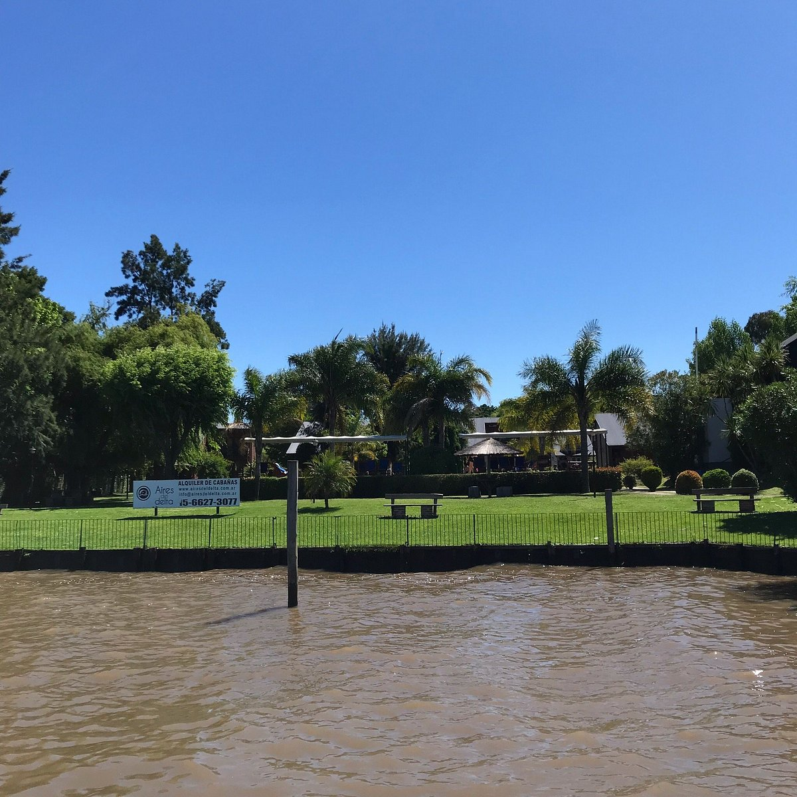
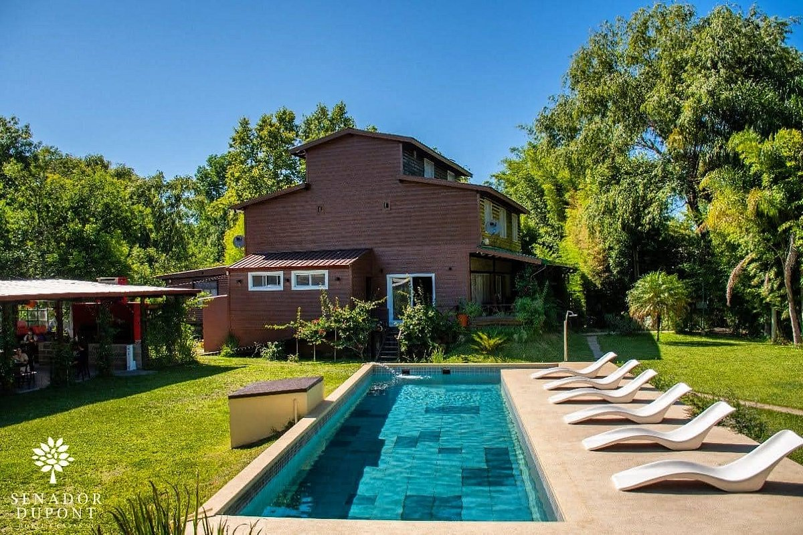
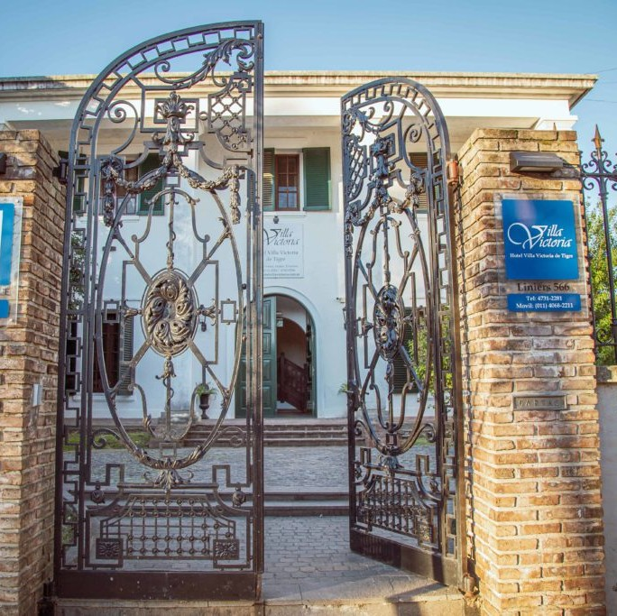
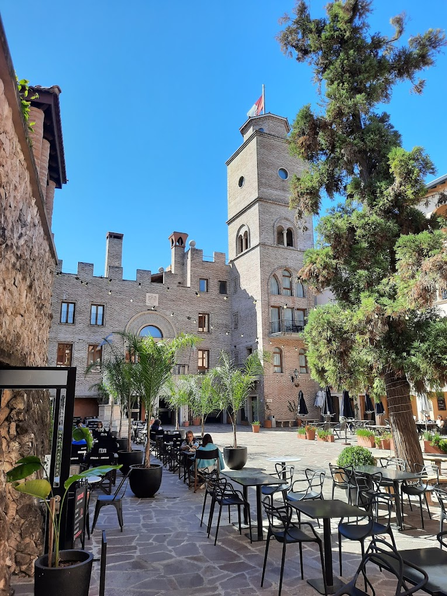
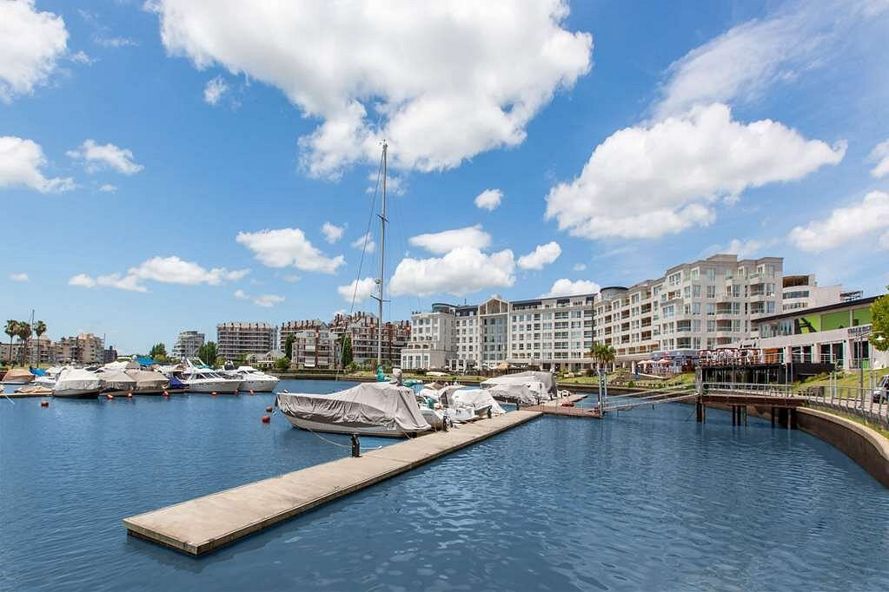

Aguas Mansas

Si pensás en algo económico pero con buena atención, desayuno incluido y cerca del centro, el
hostal Aguas Mansas es una gran opción, con piscina, estacionamiento gratis y acceso a wi-fi.
Cabañas Aires del Delta

En un entorno natural, a la vera del río y con un amplio parque las Cabañas Aires del Delta son una
excelente elección. Están ubicadas en el cruce entre los ríos Sarmiento y Luján. Cuentan con
internet y desayuno gratis, parrilas, piscina, espacios de juegos y actividades para niños y
adultos.
Hotel Senador Dupont

Sobre el río Carapachay, en el Delta de Tigre, encontramos el Hostal Senador Dupont, construido
sobre un gran
predio de 40 hectáreas. Cuenta con habitaciones con aire acondicionado, algunas de las cuales se
encuentran
en el Convento San Francisco. Espacios para eventos privados y reuniones de negocios. Restaurante
con exquisita
gastronomía y shows en vivo, visitas guiadas al Convento San Francisco, excursiones, trekking, kayak
y remo,
entre otras.
Hotel Villa Victoria

Con el estilo colonial que caracterizó históricamente a la ciudad, el Hotel Villa Victoria de Tigre
nos
tansporta a otras épocas.
Emplazado en el corazón de la ciudad, nos ofrece estacionamiento, wi-fi, acceso a las piscinas y
desayuno
gratuitos, aire acondicionado y calefacción, servicio al cuarto en algunas habitaciones y una
excelente
gastronomía.
Torrepueblo

Complejo de Suites para alojamiento, paseo comercial, plaza gastronómica y de salud. Todo diseñado
en una arquitectura y ambientación italiano-toscana única en el país que invita a tu cabeza a viajar
durante tu visita. Seguridad privada, acceso y estacionamiento gratuito. Tambièn hay shows en vivo y
eventos.
Hotel Wyndham Nordelta

Wyndham Nordelta es un hotel 5 estrellas de lujo que cuenta con 7 amplios salones de reunión y
eventos. Piscina al aire libre y un gimnasio abierto las 24 horas. Conexión Wi Fi gratuita, TV LED
por Cable, caja de seguridad, minibar. También cuentan con baño privado con hidromasaje, ducha y
amenities.
Desayuno incluido. Servicio exclusivo de valet parking y spa (con cargo adicional). Servicio a la
habitación las 24 hs.